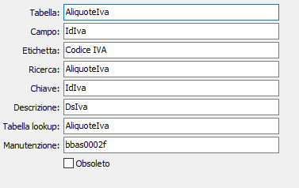

Tabelle associazioni
La tabella consente di codificare le informazioni relative ai campi delle tabelle di OS1, da utilizzare per l'associazione dei codici nelle importazioni dati. Questa tabella viene fornita precaricata con le informazioni relative alle principali tabelle.
Sono attivi i tasti Stampa ed Anteprima sulla toolbar principale per effettuare la stampa dei dati presenti.
La modifica di questa tabella può compromettere il corretto funzionamento delle procedure di importazione, per questo motivo dovrebbe essere effettuata solo dal personale dell'assistenza software.

TABELLA: campo obbligatorio, indica il nome della tabella di OS1.
CAMPO: campo obbligatorio, indica il nome del campo che sarà utilizzato per la trascodifica.
ETICHETTA: campo obbligatorio, indica l'etichetta da riportare nella finestra relativa all'associazione codice in corrispondenza del campo di OS1.
RICERCA: nome della ricerca relativa alla tabella in oggetto.
CHIAVE: campo obbligatorio, indica il nome del campo della tabella da utilizzare per la trascodifica dei valori. Se la chiave è composta da più campi, questi devono essere separati dal carattere ';' (per esempio IdBanca;IdAgenzia per le agenzie bancarie).
DESCRIZIONE: nome del campo descrizione relativo alla tabella in oggetto.
TABELLA LOOKUP: nome della tabella da utilizzare per la lettura del campo descrizione.
MANUTENZIONE: nome del programma di manutenzione da richiamare, in fase di assegnazione codici, dal campo di OS1.